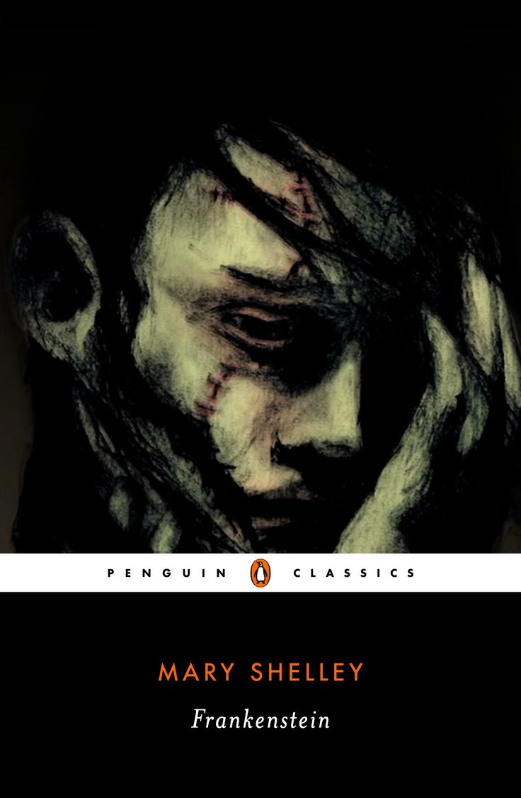
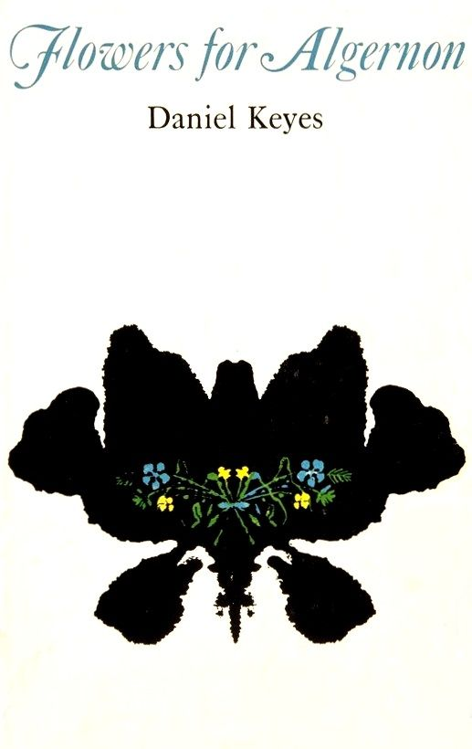
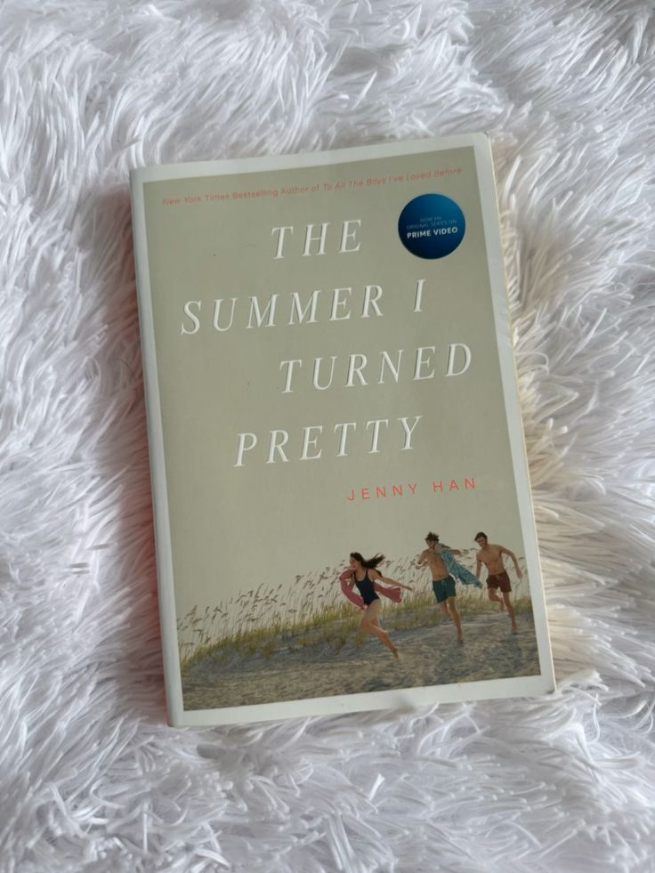
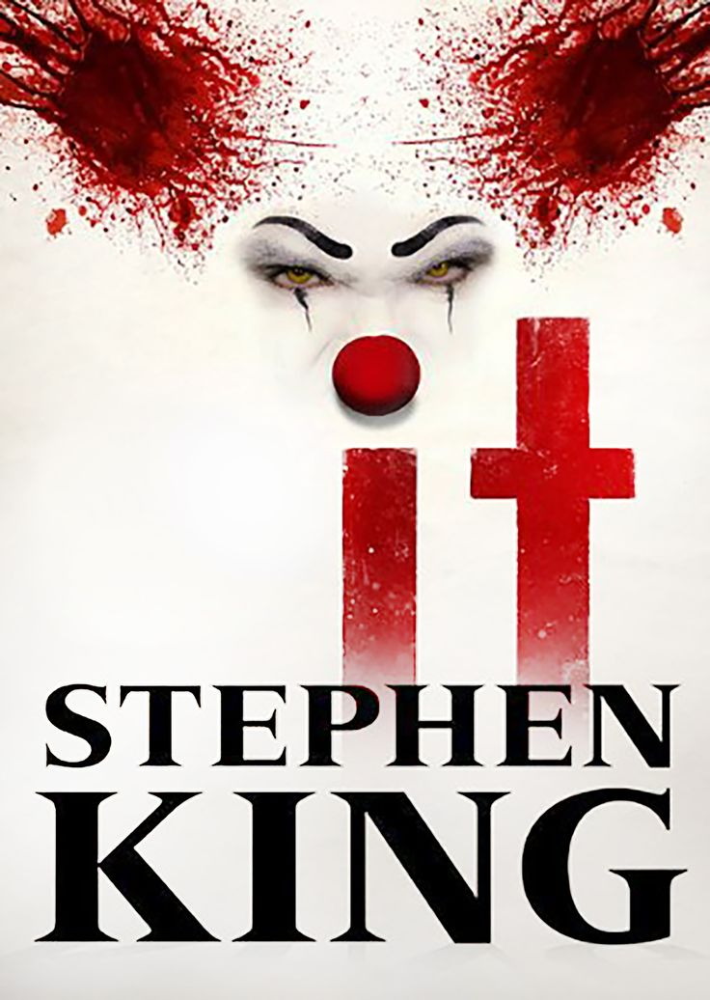
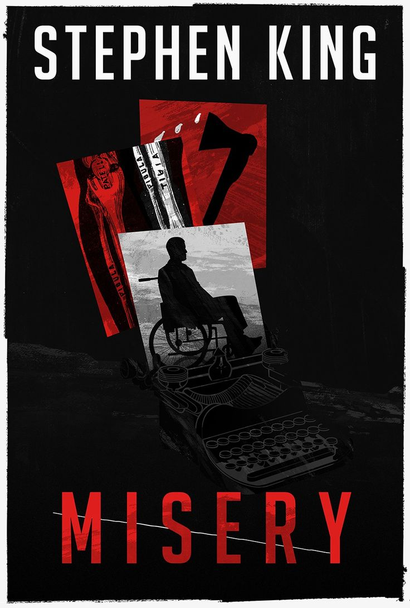

Biblioteca
Clássicos
Frankenstein
Frankenstein é muito mais do que uma história de terror. É um romance sobre solidão, criação e responsabilidade emocional. Mary Shelley constrói uma narrativa melancólica que questiona o que significa ser humano e o que acontece quando o abandono fala mais alto do que o afeto.
Noites Brancas

Um retrato delicado da solidão e dos encontros breves que podem marcar uma vida inteira.
Crime e Castigo
Crime e Castigo é uma leitura intensa, mas profundamente humana. Mais do que uma história sobre culpa ou justiça, este livro mergulha na mente de alguém que tenta racionalizar seus próprios limites morais. Dostoiévski constrói uma narrativa densa, emocional e cheia de conflitos internos.
A leitura convida à reflexão sobre consciência, arrependimento e a complexidade das escolhas humanas. Apesar da fama de ser um livro difícil, a força da história está justamente na forma como ela aproxima o leitor dos pensamentos mais íntimos dos personagens.
É um livro para quem gosta de histórias psicológicas, personagens imperfeitos e narrativas que permanecem ecoando muito depois da última página. Uma leitura exigente, mas extremamente recompensadora.
Romance
Flores para Algernon
Flores para Algernon é uma leitura sensível e emocionalmente intensa, que fala sobre inteligência, afeto e pertencimento. A história acompanha a transformação de um personagem que deseja, acima de tudo, ser compreendido e aceito.
O livro provoca reflexões profundas sobre empatia, solidão e a forma como a sociedade trata quem foge dos padrões. A narrativa é delicada, mas ao mesmo tempo dolorosa, conduzindo o leitor por emoções que crescem de maneira silenciosa e inevitável.
É uma leitura para quem gosta de histórias humanas, tocantes e que permanecem no coração muito depois do fim. Um livro curto, mas impossível de esquecer.
O verão que mudou minha vida
Essa é uma história leve, nostálgica e envolvente sobre crescimento, primeiras paixões e a transição delicada entre a adolescência e a vida adulta.
O livro captura a sensação de verões que parecem eternos, cheios de pequenas descobertas, inseguranças e sentimentos intensos. A narrativa é simples, mas carregada de emoção e identificação.
Uma leitura perfeita para quem busca conforto, romance e histórias que aquecem o coração, trazendo aquela sensação de lembranças boas e dias ensolarados.
Terror e Suspense
It
Essa é uma história sobre medo, mas também sobre amizade, infância e memória. Stephen King constrói um terror que vai além do sobrenatural, explorando medos que nascem da imaginação, do crescimento e das experiências que nos marcam para sempre.
A narrativa alterna entre passado e presente, criando uma atmosfera envolvente que mistura nostalgia e tensão. Mesmo sendo um livro longo, a leitura se sustenta pela força dos personagens e pela sensação constante de inquietação.
É uma leitura ideal para quem gosta de terror psicológico, histórias que acompanham personagens ao longo da vida e narrativas que falam tanto sobre monstros quanto sobre o que carregamos dentro de nós.
Misery
Misery é um suspense psicológico intenso e claustrofóbico. A história se desenvolve quase inteiramente em um único espaço, o que torna a leitura ainda mais sufocante e envolvente. Stephen King explora o medo de perder o controle e a fragilidade humana em situações extremas e perturbadoras.
O terror aqui não vem de criaturas sobrenaturais, mas de relações de poder, obsessão e dependência. Cada página aumenta a tensão de forma gradual, mantendo o leitor preso à narrativa.
É uma leitura perfeita para quem gosta de suspense, tensão constante e histórias que provam que o maior medo pode estar em situações aparentemente comuns.
Library
Classics
Frankenstein
Frankenstein is far more than a horror story. It is a novel about loneliness, creation, and emotional responsibility. Mary Shelley explores what it truly means to be human and what happens when abandonment speaks louder than care.
White Nights
A delicate portrait of loneliness and brief encounters that can shape an entire life.
Crime and Punishment
Crime and Punishment is an intense yet deeply human novel. More than a story about guilt or justice, it dives into the mind of someone trying to rationalize his own moral limits. Dostoevsky builds a dense, emotional narrative filled with inner conflict.
The book invites reflection on conscience, remorse, and the complexity of human choices. Despite its reputation for being challenging, its true power lies in how closely it connects the reader to the characters inner thoughts.
This is a novel for readers who enjoy psychological depth, flawed characters and stories that linger long after the final page.
Romance
Flowers for Algernon
Flowers for Algernon is a sensitive and emotionally powerful novel about intelligence, affection and belonging. The story follows a character whose deepest desire is to be understood and accepted.
The book invites reflection on empathy, loneliness and the way society treats those who fall outside conventional norms. Its narrative is gentle yet deeply painful, guiding the reader through emotions that grow quietly and inevitably.
This is a story for readers who appreciate human, moving narratives that linger long after the final page.
The Summer I Turned Pretty
This is a light, nostalgic and heartfelt story about growing up, first loves and the delicate transition from adolescence into adulthood.
The novel captures the feeling of summers that seem endless, filled with small discoveries, insecurities and intense emotions. Its narrative is simple, yet deeply relatable.
This book is perfect for readers seeking comfort, romance and stories that feel warm and familiar, like cherished summer memories.
Horror and Thriller
It
This is a story about fear, but also about friendship, childhood and memory. Stephen King creates a form of horror that goes beyond the supernatural, exploring fears born from imagination, growing up and the experiences that stay with us forever.
The narrative moves between past and present, building an immersive atmosphere filled with both nostalgia and tension. Despite its length, the story remains compelling through strong characters and a constant sense of unease.
This book is perfect for readers who enjoy psychological horror, coming of age stories and narratives that confront both monsters and inner fears.
Misery
Misery is an intense and claustrophobic psychological thriller. The story unfolds mostly in a single setting, which makes the reading experience even more suffocating and gripping. Stephen King explores the fear of losing control and human vulnerability under extreme circumstances.
The horror here does not come from supernatural elements, but from power dynamics, obsession and dependency. Each page gradually builds tension, keeping the reader completely absorbed.
This book is ideal for readers who enjoy suspense, sustained tension and stories that reveal how fear can emerge from seemingly ordinary situations.